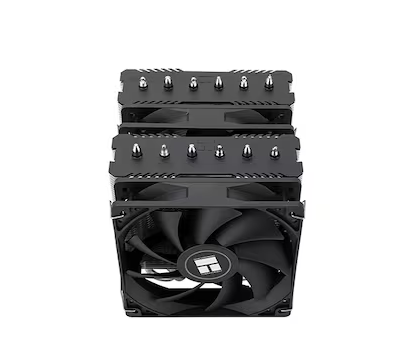

부품 고르는 법 - 부품 별 선탹방법
공랭
공랭쿨러는 컴퓨터 CPU나 GPU의 열을 식히기 위해 팬과 방열판을 사용하는 냉각 장치입니다. 장점으로는, 구조가 비교적 간단하고 설치가 쉬우며, 가격이 수냉쿨러에 비해 저렴합니다. 또한 유지보수가 거의 필요 없고, 고장 확률이 낮아 안정성이 높다는 점도 큰 매력입니다. 소음 수준도 모델에 따라 다르지만, 적절한 팬을 사용하면 비교적 조용한 환경을 유지할 수 있습니다. 반면 단점으로는, 수냉쿨러에 비해 냉각 성능이 떨어질 수 있으며, 특히 고성능 CPU나 오버클럭 시에는 열을 효율적으로 해소하지 못할 가능성이 있습니다. 크기가 커질수록 케이스 내부 공간을 많이 차지해 호환성 문제나 조립 난이도가 높아질 수 있습니다. 또한 팬이 먼지를 흡입해 청소가 필요하며, 장시간 사용 시 소음이 증가할 수 있습니다.
 공랭쿨러에서 싱글타워와 듀얼타워는 방열판(히트싱크)의 구조를 의미합니다. 기본 CPU 쿨러는 보통 CPU 제조사에서 제공하는 번들 쿨러로, 간단한 구조와 적당한 냉각 성능을 갖추고 있어 일반적인 작업용 PC에 적합합니다. 가격이 포함되어 있어 추가 비용이 없고 설치가 쉬우나, 고성능 작업이나 오버클럭 환경에서는 냉각 성능이 부족할 수 있습니다. 싱글타워 공랭쿨러는 하나의 히트싱크 타워와 팬으로 구성되어 크기가 비교적 작고 무게가 가벼워 대부분의 케이스와 호환성이 좋으며 설치가 쉽고 가격도 상대적으로 저렴한 편입니다. 하지만 냉각 면적이 듀얼타워에 비해 작아 고성능 CPU나 오버클럭 시에는 냉각 성능이 부족할 수 있습니다. 듀얼타워 공랭쿨러는 두 개의 히트싱크 타워를 나란히 배치하고, 보통 팬도 두 개 이상 사용해 히트싱크 표면적이 넓어 열을 더 효과적으로 분산시키고 강력한 냉각 성능을 제공합니다. 크기와 무게가 커서 케이스 호환성에 제한이 있을 수 있고 설치가 복잡하며 가격도 더 비싼 편이지만, 최근에는 싱글타워 모델과 가격 차이가 크지 않은 듀얼타워 쿨러도 많아 가성비 좋은 선택지가 다양해지고 있습니다. 또한, 무거운 무게로 인해 메인보드에 부담을 줄 수 있어 주의가 필요합니다.
 시스템 팬은 PC 내부 공기 흐름을 원활하게 하여 부품의 온도를 낮추는 데 중요한 역할을 합니다. CPU 쿨러나 그래픽카드 쿨러와 달리, 시스템 팬은 케이스 내부 곳곳에 설치되어 전체적인 냉각 효과를 높입니다. 보통 케이스 앞쪽과 아래쪽에서 신선한 공기를 들여오고, 뒤쪽과 위쪽에서 뜨거운 공기를 배출하는 역할을 맡습니다. 시스템 팬의 크기는 주로 80mm, 120mm, 140mm, 200mm 등 다양하며, 크기가 클수록 적은 회전수로도 더 많은 공기를 이동시킬 수 있어 소음이 적은 편입니다. 팬의 속도(RPM)는 냉각 성능과 소음에 직접적인 영향을 주며, PWM 기능이 있는 팬은 메인보드와 연동해 필요에 따라 속도를 자동으로 조절할 수 있습니다. 적절한 시스템 팬 배치는 공기 흐름(에어플로우)을 극대화해 부품 온도를 낮추고, 과열로 인한 성능 저하나 고장 위험을 줄이는 데 도움을 줍니다. 따라서 팬을 설치할 때는 흡기와 배기의 방향을 고려하고, 먼지 필터를 활용해 먼지 유입을 최소화하는 것도 중요합니다. 또한, 일부 사용자는 ‘리버스 팬(Reverse Fan)’을 설치하기도 하는데, 이는 일반적인 공기 흐름과 반대로 팬을 장착해 특정 부품이나 공간에 신선한 공기를 직접 보내기 위한 방식입니다. 리버스 팬은 케이스 내부의 특정 열 집중 구역을 냉각하는 데 효과적일 수 있으나, 전체적인 공기 흐름을 방해하거나 먼지가 쌓이기 쉬운 단점도 있어 신중한 설치가 필요합니다. 대표적인 제조사로는 Thermalright, 잘만, Thermaltake, ARCTIC등이 있습니다.
시스템 팬은 PC 내부 공기 흐름을 원활하게 하여 부품의 온도를 낮추는 데 중요한 역할을 합니다. CPU 쿨러나 그래픽카드 쿨러와 달리, 시스템 팬은 케이스 내부 곳곳에 설치되어 전체적인 냉각 효과를 높입니다. 보통 케이스 앞쪽과 아래쪽에서 신선한 공기를 들여오고, 뒤쪽과 위쪽에서 뜨거운 공기를 배출하는 역할을 맡습니다. 시스템 팬의 크기는 주로 80mm, 120mm, 140mm, 200mm 등 다양하며, 크기가 클수록 적은 회전수로도 더 많은 공기를 이동시킬 수 있어 소음이 적은 편입니다. 팬의 속도(RPM)는 냉각 성능과 소음에 직접적인 영향을 주며, PWM 기능이 있는 팬은 메인보드와 연동해 필요에 따라 속도를 자동으로 조절할 수 있습니다. 적절한 시스템 팬 배치는 공기 흐름(에어플로우)을 극대화해 부품 온도를 낮추고, 과열로 인한 성능 저하나 고장 위험을 줄이는 데 도움을 줍니다. 따라서 팬을 설치할 때는 흡기와 배기의 방향을 고려하고, 먼지 필터를 활용해 먼지 유입을 최소화하는 것도 중요합니다. 또한, 일부 사용자는 ‘리버스 팬(Reverse Fan)’을 설치하기도 하는데, 이는 일반적인 공기 흐름과 반대로 팬을 장착해 특정 부품이나 공간에 신선한 공기를 직접 보내기 위한 방식입니다. 리버스 팬은 케이스 내부의 특정 열 집중 구역을 냉각하는 데 효과적일 수 있으나, 전체적인 공기 흐름을 방해하거나 먼지가 쌓이기 쉬운 단점도 있어 신중한 설치가 필요합니다. 대표적인 제조사로는 Thermalright, 잘만, Thermaltake, ARCTIC등이 있습니다.
| 팬 크기 | 특징 | 장점 | 단점 |
|---|---|---|---|
| 80mm | 소형 케이스용, 빠른 RPM | 소형 케이스에 적합, 저렴한 가격 | 소음 큼, 풍량 적음 |
| 92mm | 80mm보다 풍량 향상 | 중간 크기 케이스에 적합 | 크기에 비해 소음 있음 |
| 120mm | 표준 크기, 가장 흔한 크기 | 풍량과 정숙성의 균형 | 특별한 단점 없음 |
| 140mm | 120mm보다 더 넓은 커버리지 | 더 많은 풍량, 낮은 RPM → 더 조용함 | 케이스 호환성 확인 필요 |
| 200mm | 대형 팬, 낮은 회전속도 | 강력한 풍량, 매우 조용함 | 장착 가능한 케이스 제한적 |